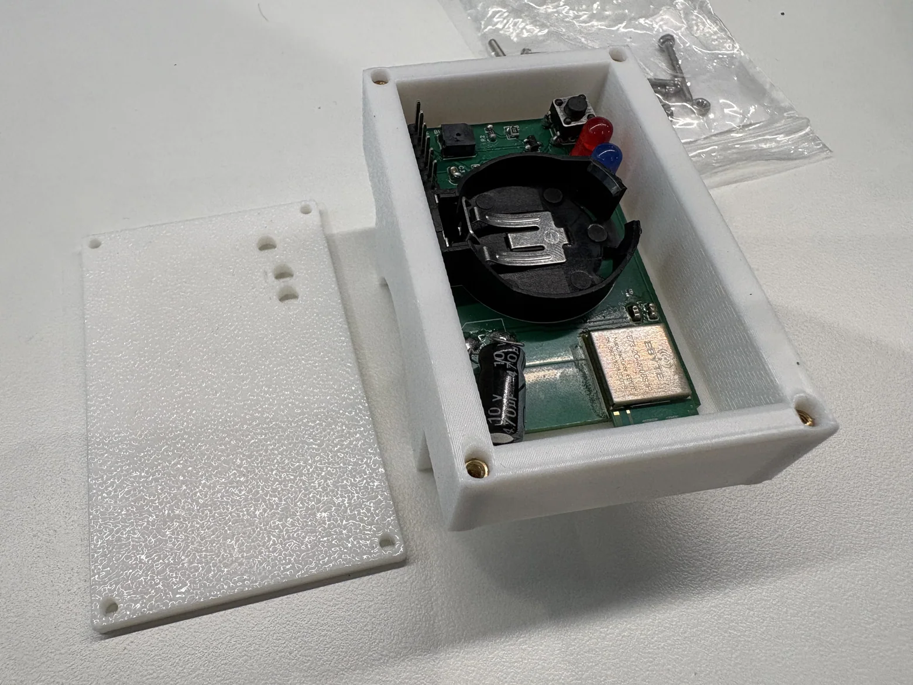

返回硬件项目索引
返回硬件项目索引H33 / 硬件团队 · 文档展示
蓝牙寻车器
档案封面选自装配结构。
装置可以工作，蜂鸣器暂时无法发声。
自动寻车装置是一款基于 nRF54L15 的低功耗蓝牙寻车终端，针对大型车库找车难的问题。装置以 CR2450 纽扣电池供电，经三极管驱动无源蜂鸣器，双 LED 提供声光提示，配轻触按键，体积小巧、可固定于车架。
软件采用 10ms 节拍的非阻塞主循环与模块化架构：BLE 常开广播（+8dBm、100ms 间隔），手机通过 nRF Connect 连接后写入命令特征值即可触发寻车；内置广播／已连接／寻车三态状态机，并用消息队列实现协议栈线程与主线程的无锁通信。对外预留 16 条命令与状态特征值，可在线调整音调、响度、闪烁频率与广播参数。
实测上电 0.5 秒内进入广播，1 米处 RSSI 约 -50dBm，10 米内可稳定连接；手机端实时显示信号强度，可依 RSSI 梯度判断车辆方位，并为蓝牙 6.0 信道探测高精度测距预留接口。
